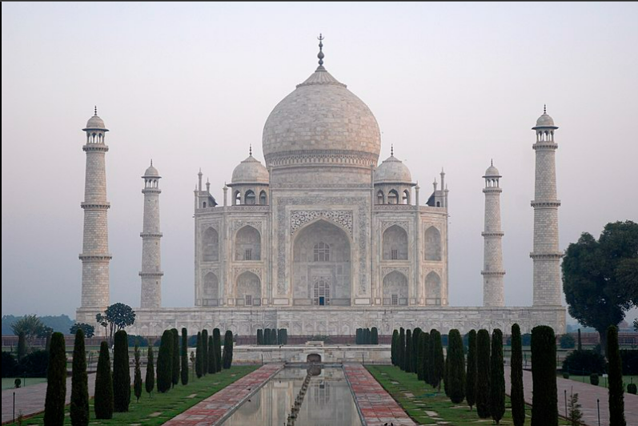
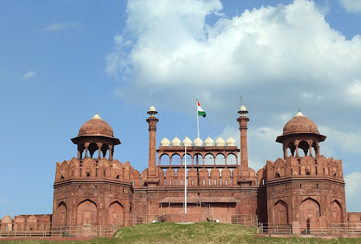
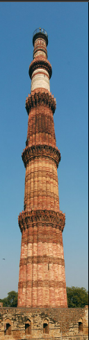
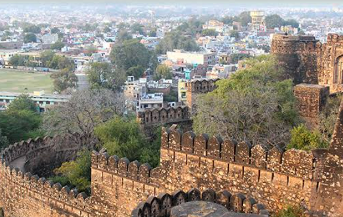
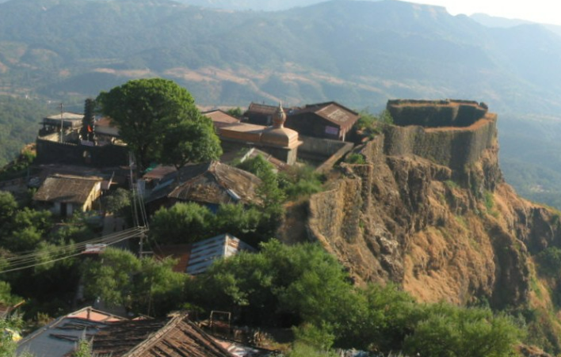
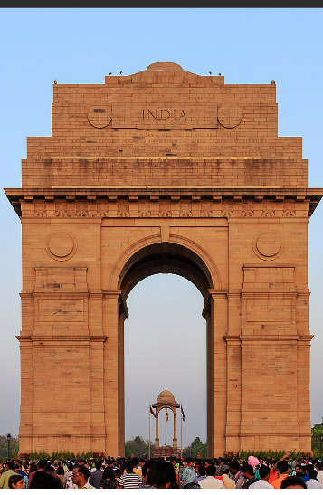

- 
-
TAJ MAHAL
The Taj Mahal is an Islamic ivory-white marble mausoleum on the right bank of the river Yamuna in the Indian city of Agra. It was commissioned in 1631 by the Mughal emperor Shah Jahan to house the tomb of his favourite wife, Mumtaz Mahal; it also houses the tomb of Shah Jahan himself .
The tomb is the centrepiece of a 17-hectare (42-acre) complex, which includes a mosque and a guest house, and is set in formal gardens bounded on three sides by a crenellated wall. Construction of the mausoleum was essentially completed in 1643, but work continued on other phases of the project for another 10 years. The Taj Mahal complex is believed to have been completed in its entirety in 1653 at a cost estimated at the time to be around ₹32 million, which in 2020 would be approximately ₹70 billion (about US $1 billion). The construction project employed some 20,000 artisans under the guidance of a board of architects led by Ustad Ahmad Lahauri, the emperor’s court architect.
Various types of symbolism have been employed in the Taj to reflect natural beauty and divinity. The Taj Mahal was designated as a UNESCO World Heritage Site in 1983 for being "the jewel of Muslim art in India and one of the universally admired masterpieces of the world's heritage". It is regarded by many as the best example of Mughal architecture and a symbol of India's rich history. The Taj Mahal attracts more than 6 million visitors a year[3] and in 2007, it was declared a winner of the New 7 Wonders of the World (2000_2007) initiative.
- 
RED FORT
The Red Fort or Lal Qila is a historic fort in Old Delhi, Delhi in India that served as the main residence of the Mughal Emperors. Emperor Shah Jahan commissioned construction of the Red Fort on 12 May 1638, when he decided to shift his capital from Agra to Delhi. Originally red and white, its design is credited to architect Ustad Ahmad Lahori, who also constructed the Taj Mahal. The fort represents the peak in Mughal architecture under Shah Jahan, and combines Persianate palace architecture with Indian traditions. The fort was plundered of its artwork and jewels during Nader Shah's invasion of the Mughal Empire in 1739. Most of the fort's marble structures were subsequently demolished by the British following the Indian Rebellion of 1857. The fort's defensive walls were largely undamaged, and the fortress was subsequently used as a garrison. On 15 August 1947, the first Prime Minister of India, Jawaharlal Nehru, raised the Indian flag above the Lahori Gate. Every year on India's Independence Day (15 August), the Prime Minister hoists the Indian tricolour flag at the fort's main gate and delivers a nationally broadcast speech from its ramparts.
- 
QUTUB MINAR
The Qutb Minar, also spelled Qutub Minar and Qutab Minar, is a minaret and "victory tower" that forms part of the Qutb complex, which lies at the site of Delhi's oldest fortified city, Lal Kot, founded by the Tomar Rajputs.[3] It is a UNESCO World Heritage Site in the Mehrauli area of South Delhi, India.[4][5] It is one of the most visited tourist spots in the city, mostly built between 1199 and 1220.[6][7][4] It can be compared to the 62-metre all-brick Minaret of Jam in Afghanistan, of c.1190, which was constructed a decade or so before the probable start of the Delhi tower.[8] The surfaces of both are elaborately decorated with inscriptions and geometric patterns. The Qutb Minar has a shaft that is fluted with "superb stalactite bracketing under the balconies" at the top of each stage.[9][10][11] In general, minarets were slow to be used in India and are often detached from the main mosque where they exist.
- 
JHANSI FORT
Jhansi Fort or Jhansi ka Kila is a fortress situated on a large hilltop called Bangira, in Uttar Pradesh, Northern India. It served as a stronghold of the Chandela Kings in Balwant Nagar (old name of Jhansi) from the 11th through the 17th centuryThe fort standing in the hilly area shows how the North Indian style of fort construction differs from that of the South. In the South, most of the forts were built on the sea beds like the Bekal Fort in Kerala. The granite walls of the fort are between 16 and 20 feet thick and on the south side, the city walls meet. The south face of the fort is almost perpendicular.[6] There are 10 gates giving access to the fort. These are Khanderao Gate, Datia Gate, Bhanderi Gate(Rani laxmi bai escaped from this gate in 1857 battle), Unnao Gate, BadaGaon Gate, Laxmi Gate, Sagar Gate, Orchha Gate, Saiyar Gate and Chand Gate. Notable sights in the fort are the Shiva temple, Ganesh temple at the entrance, and the Kadak Bijli cannon used in the uprising of 1857. The memorial board reminds one of the hair-raising feat of the Rani Lakshmibai in jumping on horseback from the fort. Nearby is the Rani Mahal, built in the later half of the 19th century where there is now an archaeological museum. The fort extends to a sprawling 15 acres (61,000 m2) and this colossal structure measures about 312m in length and 225m in width. On the whole, there are twenty-two supports with a mammoth strengthening wall surrounded by a moat on both sides. The shattered upholder on the eastern side was rebuilt by the British, who also added a floor to Panch Mahal.
- 
SHIVAJI FORT
Chhatrapati Shivaji, founder of Maratha empire in western India in 1664, was well known for his forts. Many, like Panhala Fort and Rajgad existed before him but others, like Sindhudurg and Pratapgad, were built by him from scratch.[1] Also, the fort of Raigad was built as the place of throne, i.e., the capital, of Maratha Empire by Hirojee Indulkar on the orders of the Chhatrapati. This is the place where Shivaji was crowned and today also his Samadhi (shrine) stands in front of the Jagadishwar temple. These forts were central to his empire and their remains are among the foremost sources of information about his rule. The French missionary Father Fryer witnessed the fortifications of Gingee, Madras, built by Shivaji after its conquest, and appreciated his technical know-how and knowledge.

CHITTOR FORT
The Chittorgarh (literally Chittor Fort), also known as Chittod Fort, is one of the largest forts in India. It is a UNESCO World Heritage Site. The fort was the capital of Mewar and is located in the present-day city of Chittorgarh. It sprawls over a hill 180 m (590.6 ft) in height spread over an area of 280 ha (691.9 acres) above the plains of the valley drained by the Berach River. The fort covers 65 historic structures, which include four palaces, 19 large temples, 20 large water bodies, 4 memorials and a few victory towers. In 2013, at the 37th session of the World Heritage Committee held in Phnom Penh, Cambodia, Chittorgarh Fort, along with five other forts of Rajasthan, was declared a UNESCO World Heritage Site, as a group called the Hill Forts of Rajasthan.
- 
INDIA GATE
The India Gate (formerly known as the All India War Memorial) is a war memorial located near the Rajpath on the eastern edge of the "ceremonial axis" of New Delhi, formerly called duty path. It stands as a memorial to 84,000 soldiers of the British Indian Army who died between 1914 and 1921 in the First World War, in France, Flanders, Mesopotamia, Persia, East Africa, Gallipoli and elsewhere in the Near and the Far East, and the Third Anglo-Afghan War. 13,300 servicemen's names, including some soldiers and officers from the United Kingdom, are inscribed on the gate.[2] Designed by Sir Edwin Lutyens, the gate evokes the architectural style of the memorial arch such as the Arch of Constantine, in Rome, and is often compared to the Arc de Triomphe in Paris, and the Gateway of India in Mumbai.